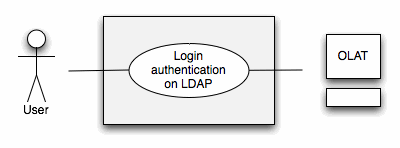
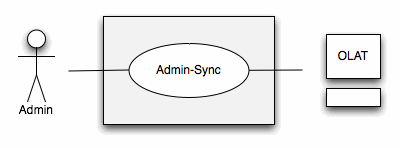
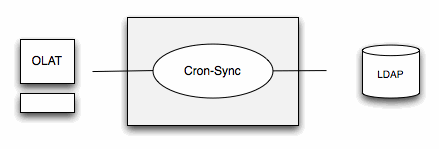
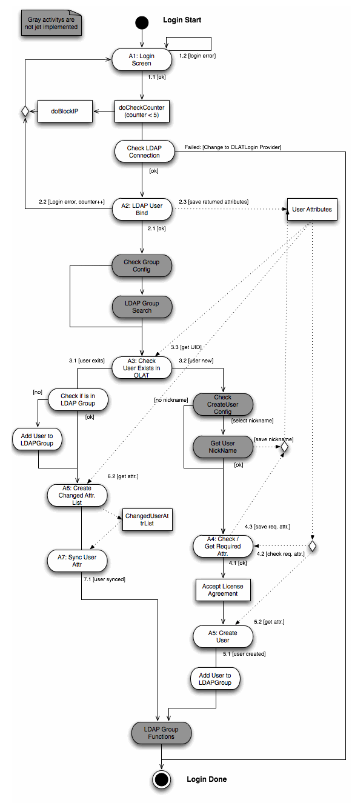
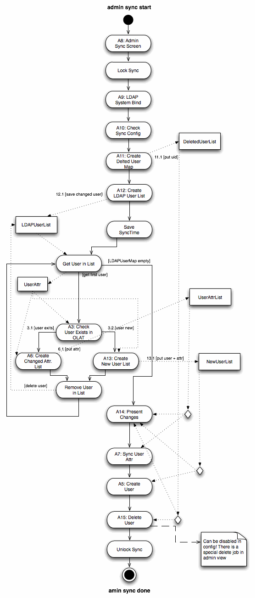
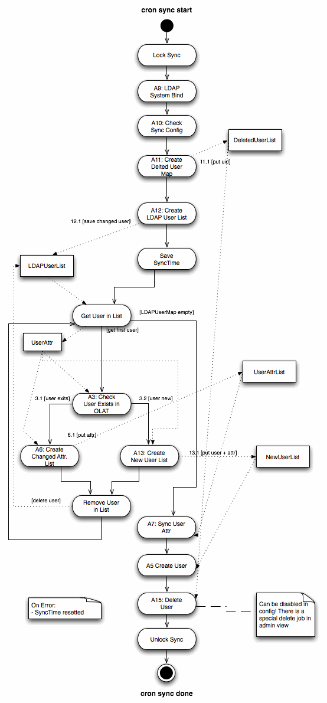
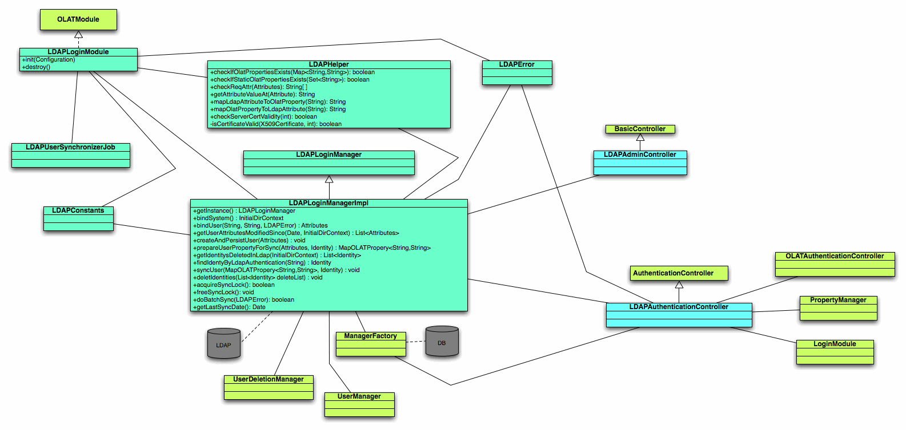

Documentation of ldap package by Maurus Rohrer during GSoC
The user enters the OLAT URL in his web browser and will be prompted to enter his user name and password. This Information is send to the configured LDAP server and checked on it's validation. If the user exits in LDAP and the password is the same as in LDAP, the user is redirected to his home environment in OLAT.

The OLAT administrator can start the admin-sync on a special side in OLAT. The admin-sync is gathering all information on the LDAP server and compares them with the one in the OLAT DB, all differences will be prompted to the administrator, if he confirms all changes will be written to the OLAT DB.

Outdated: the administrator no longer confirms the changes. The button "sync.button.start" in {@link org.olat.ldap.ui.LDAPAdminController} starts the same batch sync as the cron job, and it writes all changes at once.
In
olat.properties (ldap.ldapSyncCronSync, ldap.ldapSyncCronSyncExpression) the administrator can specify the time
and periods in which the cron-sync process should be executed. The
cron-sync process is doing the same activities as the admin-sync,
except that the changes don't need to be confirmed. All differences
will be automatically written to the OLAT DB

Flow-Diagrams:
Outdated: the gray group steps are marked as not implemented. The group sync now exists: {@link org.olat.ldap.manager.LDAPGroupVisitor} and the ldap.ldapGroupBases and ldap.user.groupAttribute keys map LDAP groups to OpenOlat groups.

Outdated: step A14 "Present Changes" no longer exists. {@link org.olat.ldap.manager.LDAPLoginManagerImpl#doBatchSync} writes the changes directly. The deletion of users runs in the sync only when ldap.deleteRemovedLDAPUsersOnSync is true or deactivate; the admin view also offers a separate delete and inactivate wizard.


Outdated: LDAPHelper, OLATModule and ManagerFactory no longer exist. The LDAP access now lives in {@link org.olat.ldap.manager.LDAPDAO} and the visitors of org.olat.ldap.manager, and LDAPSyncConfiguration holds the attribute mappings.
{@link org.olat.ldap.LDAPLoginModule} reads the ldap.* properties of
serviceconfig/olat.properties. Override them in olat.local.properties.
org/olat/ldap/_spring/ldapContext.xml builds the LDAPSyncConfiguration bean from them.
It holds the attribute maps requestAttributes, userAttributeMap,
staticUserProperties and syncOnlyOnCreateProperties. The administration page
sysadmin.menupoint.syscfg.ldapcfg starts a manual sync.
| Property | Description |
|---|---|
ldap.enable |
Switches the LDAP login module on (default false). |
ldap.default |
LDAP is the default authentication provider on the login page. |
ldap.activeDirectory |
Set to true for Microsoft Active Directory. |
ldap.ldapUrl |
URL of the LDAP server, for example ldap://ldap.example.org:389. Several URLs are allowed, separated by a space and with a trailing slash. |
ldap.sslEnabled |
Uses LDAPS. |
ldap.connectionTimeout |
Connection timeout in milliseconds (default 15000). |
ldap.ldapSystemDN, ldap.ldapSystemPW |
DN and password of the system user that reads the directory. |
ldap.ldapBases |
Search base for users. For several bases, add <value> entries to ldapBases in ldapContext.xml. |
ldap.ldapUserObjectClass, ldap.ldapUserFilter |
Object class and LDAP filter that select the users. |
ldap.ldapUserCreatedTimestampAttribute, ldap.ldapUserLastModifiedTimestampAttribute, ldap.dateFormat |
Timestamp attributes and their format. The sync uses them to find changed users. |
ldap.ldapUserPassordAttribute |
Password attribute, used when password changes are propagated. |
ldap.login.attribute |
Attribute the user enters as login name (default: the user identifier). |
ldap.attributename.useridentifyer, .email, .firstName, .lastName, .nickName |
LDAP attributes of the mandatory user properties. |
ldap.attrib.gen.map.ldapkey1..20, ldap.attrib.gen.map.olatkey1..20 |
Further mappings from an LDAP attribute to an OpenOlat user property. |
ldap.attrib.static.olatkey1..3, ldap.attrib.static.value1..3 |
User properties that get a fixed value for every LDAP user. |
ldap.attrib.sync.once.olatkey1..3 |
User properties that the sync writes only when the user is created. |
ldap.ldapCreateUsersOnLogin |
Creates the OpenOlat account at the first LDAP login. |
ldap.cacheLDAPPwdAsOLATPwdOnLogin, ldap.tryFallbackToOLATPwdOnLogin |
Stores the LDAP password as OpenOlat password, and falls back to it when the LDAP server is not reachable. |
ldap.propagatePasswordChangedOnLdapServer, ldap.changePasswordUrl, ldap.resetLockTimoutOnPasswordChange |
Password change: write it to the LDAP server, or link to an external page. |
ldap.convertExistingLocalUsersToLDAPUsers |
Converts a local account with the same user name into an LDAP account. |
ldap.deleteRemovedLDAPUsersOnSync, ldap.deleteRemovedLDAPUsersPercentage |
Deletes or deactivates (deactivate) users that are no longer in LDAP. The sync stops when more than the given percentage would be removed. |
ldap.ldapSyncOnStartup, ldap.ldapSyncCronSync, ldap.ldapSyncCronSyncExpression |
Sync at startup and as cron job (default every hour, 0 0 * * * ?). |
ldap.batch.size |
Page size of the LDAP searches (default 50). |
ldap.ldapGroupBases, ldap.ldapGroupObjectClass, ldap.ldapGroupFilter |
LDAP groups that are synchronized as OpenOlat business groups. |
ldap.user.groupAttribute, ldap.user.coachedGroupAttribute (+ Separator), ldap.coachRoleAttribute, ldap.coachRoleValue, ldap.groupCoachAsParticipant |
Group membership and coach role taken from user attributes. |
ldap.ldapOrganisationBases, ldap.ldapOrganisationObjectClass, ldap.ldapOrganisationFilter |
LDAP groups that are synchronized as organisations. |
ldap.authorsGroupBases, ldap.authorRoleAttribute, ldap.authorRoleValue |
Author role, from a group or from an attribute value. The same pattern exists for userManagers, groupManagers, qpoolManagers, curriculumManagers and learningResourceManagers (for learning resource managers the key is ldap.learningResourceManagersGroupBase). |